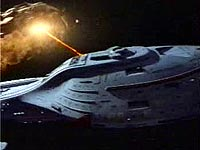
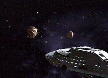
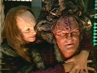
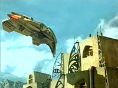
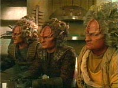

|
MANCHETE
DO EPISÓDIO
Nova pregação da Primeira Diretriz traz
retrocesso na caracterização da capitã
Episódio
anterior | Próximo
episódio
Sinopse:
Data Estelar: 49337.4.
 Depois
de uma série de ataques Kazons que avariam a nave, Chakotay insiste
a Janeway que comece a pensar mais como os Maquis, para assegurar a
sobrevivência da tripulação no quadrante Delta. Ele sugere que
seja formada uma aliança com algumas facções --opção que a
capitã rejeita até Tuvok convencê-la de que tal providência
poderia trazer estabilidade para a região.
Enquanto Neelix visita um contato dos Kazons-Pommar no planeta
Sobras, Janeway se reúne com Seska e Culluh, o Maje dos
Kazons-Nistrim. Ele teimosamente se recusa a permitir que uma mulher
dite os termos da aliança, o que leva a capitã a desistir das
negociaões. Em Sobras, Neelix também não é bem-sucedido, sendo
preso com outros forasteiros.
 Lá, o
Talaxiano conhece Mabus, um líder dos Trabe que o assegura de que a
ajuda está a caminho, graças a um sinal enviado a naves na área.
Como predito, apoiadores Trabes vêm e liberam os prisioneiros. Lá, o
Talaxiano conhece Mabus, um líder dos Trabe que o assegura de que a
ajuda está a caminho, graças a um sinal enviado a naves na área.
Como predito, apoiadores Trabes vêm e liberam os prisioneiros.
Ao mesmo tempo, a Voyager traça curso para Sobras a fim de buscar
Neelix, mas seu caminho é bloqueado por uma armada de naves Kazons
se aproximando de sua posição. A apreensão, no entanto,
transforma-se em alívio, quando a tripulação descobre que
trata-se de dos Trabes, com Neelix a bordo. Mabus explica que sua raça
já tratou os Kazons como escravos, até estes se virarem contra os
dominadores. Desde então, os Trabes têm vivido como nômades, em
exílio. Apesar da rivalidade entre as duas espécies, Janeway e
Mabus formam uma aliança e chamam todas as facções Kazons para
uma conferência de paz. Seska persuade Culluh a atender ao
encontro, como um primeiro passo para erradicar os Trabes de uma vez
por todas e tomar a Voyager como troféu.
 Neelix descobre com
suas fontes que alguém pode estar tentando sabotar a conferência,
então Tuvok e a capitã prosseguem com cautela à reunião dos
Majes. Subitamente, uma nave Trabe aparece e abre fogo contra a sala
em que ocorre a discussão. A Voyager dispara torpedos contra os
Trabes e Janeway, atordoada pela emboscada, ordena que Mabus deixe
sua nave. Entretanto, o dano está feito. Os Kazons ficam furiosos e
a tripulação está mais vulnerável do que nunca.
Comentários:
"Alliances"
traz de volta a discussão preferida de Janeway e sua trupe. A
Primeira Diretriz vale a pena, apesar da situação singular em que
eles se encontram? Para variar, o que o episódio tem a dizer é:
sim, a regra máxima da Frota Estelar permanece sendo a melhor opção
para nossos pobres tripulantes perdidos.
 Seska retorna mais
manipulativa e cruel do que nunca, com a gravidez já bastante avançada.
É interessante analisar seu relacionamento com Culluh. Embora ele
seja o líder da facção Nistrim, na verdade é ela que realmente dá
as ordens. Está completamente domesticado pela experiente
Cardassiana, uma mulher armada com táticas Maquis e familiaridade
com a Voyager e sua tripulação. O bebê também parece ajudar
nesse ponto. Mas ela também sabe quando baixar a cabeça para o
maje, cedendo a suas demonstrações de superioridade e
masculinidade.
Paralelamente, Chakotay sai de sua toca e enfrenta Janeway. Já
estava na hora de a capitã perceber que nem todas as leis da Frota
são aplicáveis à situação da Voyager. O primeiro-oficial
enfatiza que as regras a serem seguidas pela tripulação devem ter
um sentido pragmático, isto é, prático. A própria Janeway disse
no início da longa jornada que a meta primordial seria encontrar um
meio de voltar para o quadrante Alfa.
Nesse episódio, a personagem da capitã parece sofrer um retrocesso
em seu desenvolvimento, algo que ocorreu, em parte, pelo fato de o
roteiro abordar os Kazons, os primeiros grandes vilões da série.
Parece que sua disputa é de natureza pessoal, especialmente quando
Janeway e Culluh se encontram. Ela certamente poderia ser mais flexível
e tolerante ao se deparar com o machismo do arrogante maje Nistrim.
Contudo, prefere impor sua presença e ameaçar uma negociação que
já não é genuína e aberta.
 Outra
grande falha tática foi aliar-se aos Trabes, os inimigos mortais
dos Kazons. Tuvok foi bem claro (e lógico) ao dizer que tal
compromisso arriscaria uma união entre todas as facções contra a
Voyager. Porém, Janeway (com sua experiência pessoal), prefere
assumir tal risco para não ter que aguentar a presença de Seska e
Culluh.
A atuação de Chakotay na história foi muito boa. Ele conhece os
protocolos e sabe quais são os que realmente importam. Ele também
sabe como sobreviver a obstáculos intransponíveis e se virar com o
que tem. Ao resistir aos conselhos de seu primeiro-oficial, Janeway
também está sinalizando seu "calcanhar de Aquiles" a
Seska. A Cardassiana a conhece bem e procura aproveitar as
oportunidades sem hesitar para tirar proveito de qualquer fraqueza
que, nesse caso, são a moral e senso de dever da capitã.
Enfim, foi bom ver Chakotay agir um pouco em vez de ficar
comodamente sentado em sua poltrona. Outro ponto positivo do episódio
foi o início do arco envolvendo personagens secundários como
Michael Jonas (o traidor) e Hogan.
 O final do episódio,
entretanto, acabou deixando a desejar. Não precisamos que a capitã
explique à audiência qual é a "moral da história de
hoje", como ela fez em seu último discurso. Teria sido muito
melhor se a reunião tivesse terminado e pudéssemos ver o clima que
ficou entre Chakotay e Janeway após o incidente --como os dois
passaram a encarar a necessidade de aderência à Primeira Diretriz.
Uma boa história que perdeu a oportunidade de ser concluída com
chave de ouro, em troca de um final moralista e quase dogmático.
Citações:
Janeway - "If you're
suggesting we abandon our principles just because we're out of
hailling range..."
("Se você está sugerindo que abandonemos nossos princípios só
porque estamos fora do alcance de contato...")
Hogan - "You know what? The Federation is 70,000 light-years
away. What does it matter what this people do with our technology?"
("Quer saber? A Federação está a 70.000 anos-luz de distância.
O que importa o que essas pessoas farão com nossa
tecnologia?")
Janeway - "I'll destroy this ship before I turn any part of
it over to the Kazon."
("Eu destruirei essa nave antes de dar qualquer parte dela aos
Kazons.")
Chakotay - "As captain, you're responsible for what's in the
best interest of your crew, and I think you have to ask yourself if
you're doing that."
("Como capitã, você é responsável pelo que for de melhor
interesse de sua tripulação, e eu acho que você deve se perguntar
se está fazendo isso.")
Trivia:
 Este é o segundo episódio a mostrar Seska como Cardassiana. O
primeiro foi "Maneuvers".
Este é o segundo episódio a mostrar Seska como Cardassiana. O
primeiro foi "Maneuvers".
Este episódio marca a primeira aparição de Simon Billig como o
tripulante Hogan e de Raphael Sbarge como o tripulante Michael
Jonas. Jonas voltará em "Threshold", "Dreadnought",
"Lifesigns" e "Investigations".
Hogan retornará em "Meld", "Investigations",
"Deadlock", "Tuvix", "Resolutions"
e "Basics, Part II".
John Gegenhuber também apareceu como Kelat em "Maneuvers"
e irá interpretar o Kazon Tierna em "Basics, Part I".
Larry Cedar também já participou de Jornada, como o dr.
Nydom, em "Armageddon
Game" (Deep Space Nine). Mirron E. Willis irá
retornar ainda, como Rettik, em "Threshold". Ele
também interpretou um guarda Klingon em "Reunion"
(Nova Geração).
Os clãs Kazons apresentados até agora são:
Hobii - Maje Jal Lorah
("Maneuvers", "Alliances")
Mostral - Maje Jal Surat
("Maneuvers", "Alliances")
Nistrim - Maje Jal Culluh
("Maneuvers", "Alliances")
Ogla - Maje Jal Razik, que sucedeu Haliz
("Caretaker", "Initiations")
Oglamar - Maje Jal Valek
("Maneuvers", "Alliances")
Pommar - Maje Jal Mennis
("Alliances")
Relora (inimigos dos Nistrim) - Maje Jal Heron
("Initiations")
Sari - (informação de nota da Paramount)
Ficha
técnica:
Escrito por Jeri Taylor
Direção de Les Landau
Exibido em 22/01/1996
Produção: 031
Elenco:
Kate Mulgrew como
Kathryn Janeway
Robert Beltran como Chakotay
Roxann Biggs-Dawson como B'Elanna Torres
Robert Duncan McNeill como Tom Paris
Jennifer Lien como Kes
Ethan Phillips como Neelix
Robert Picardo como Doutor
Tim Russ como Tuvok
Garrett Wang como Harry Kim
Elenco convidado:
Charles O. Lucia como Mabus
Anthony De Longis como Culluh
Martha Hackett como Seska
Raphael Sbarge como Michael Jonas
Larry Cedar como Tersa
John Gegenhuber como Kelat
Simon Billig como Hogan
Mirron E. Willis como Rettik
Episódio
anterior | Próximo
episódio
|